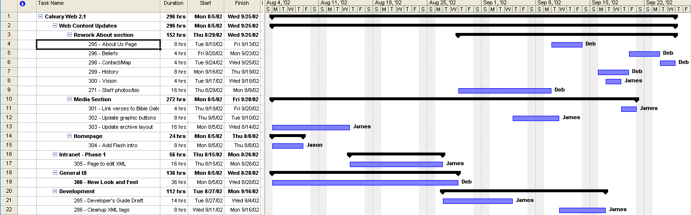

Version 2.1 is more of a loose list of items that need to be addressed due to limited time for the release of v2.0. It will also attempt to address the need to allow others to edit the content of existing web pages by offering a cruide web page in place of the complex setup of our various technology needs for development. Future versions will likely contain more strategic direction.
Numbered prefixes correspond to task items in the Berlios task manager that contain more detail. Login to Berlios and visit the task list to learn more about each task. Note for Mac users: You will need to open the Berlios site using Netscape, as they do not support Mac/Internet Explorer yet.
Note: The assigned dates are not firm, and thus the tasks may occur in the order best determined by the individual. Tasks may also be picked up by another. This schedule is for a worst case scenario, and allows room for error and unforseen circumstances given the part-time nature of the ministry.
